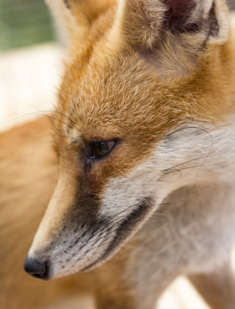
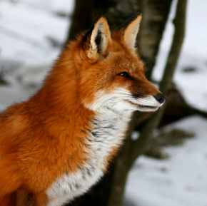
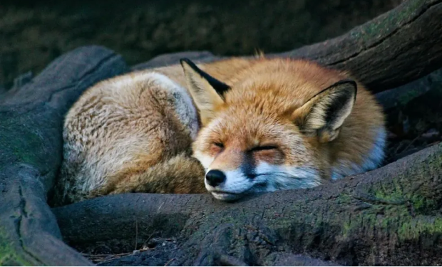

Vulpes vulpes
da família CanidaeA Vulpes vulpes, conhecida como raposa-vermelha, é a maior das raposas verdadeiras e uma das espécies de carnívoros mais amplamente distribuídas no mundo. Encontrada em todo o hemisfério norte, incluindo a América do Norte, Europa, Ásia e partes do norte da África, a raposa-vermelha é adaptável a uma variedade de habitats, desde florestas e desertos até áreas urbanas.
Sua pelagem é geralmente de um tom avermelhado, embora variações de cor também sejam comuns. As pupilas são ovais e orientadas verticalmente, e suas patas possuem garras semi-retráteis.
A dieta da raposa-vermelha é bastante variada, consistindo principalmente de pequenos mamíferos, aves, insetos, peixes, ovos e frutas. Elas também podem se alimentar de carniça e restos de comida humana, o que demonstra sua grande capacidade de adaptação alimentar. Essa flexibilidade dietética contribui para seu sucesso em diferentes ambientes.
Em termos de comportamento, as raposas-vermelhas são geralmente solitárias, mas podem ser encontradas em pares ou pequenos grupos familiares. Elas são conhecidas por suas habilidades de caça e por sua astúcia, frequentemente associadas a mitos e lendas em várias culturas. A comunicação entre as raposas inclui uma variedade de vocalizações, linguagem corporal e marcas de cheiro.
"Era uma raposa igual a cem mil outras. Mas eu fiz dela um amigo. Ela á agora única no mundo."
Antoine de Saint-Exupéry
- Estado de Conservação: Estável
- Ordem: Carnivora
- Família: Canidae
- Gênero: Vulpes
- Idade média: 4 anos
- Macho: 14,0 kg
- Fêmea: 11,2 kg
A reprodução ocorre uma vez por ano, com a fêmea dando à luz de 4 a 6 filhotes após um período de gestação de cerca de 52 dias. Os filhotes nascem cegos e dependem totalmente da mãe nas primeiras semanas de vida. A família permanece unida até que os jovens estejam prontos para se dispersar e encontrar seus próprios territórios.
Taxonomicamente, a Vulpes vulpes foi descrita pela primeira vez por Linnaeus em 1758 e possui várias subespécies, adaptadas a diferentes regiões e condições ambientais. A espécie é classificada como de menor preocupação pela Lista Vermelha da IUCN, devido à sua ampla distribuição e população estável.
O Desmodus rotundus tem um impacto significativo na pecuária, pois suas mordidas podem transmitir doenças como a raiva. Por isso, são frequentemente considerados pragas em áreas rurais. No entanto, a pesquisa sobre sua saliva anticoagulante tem potencial para aplicações médicas, como no tratamento de doenças cardiovasculares.
Em resumo, a Vulpes vulpes é uma espécie fascinante, não apenas por sua ampla distribuição e adaptabilidade, mas também por seu comportamento complexo e interação com os humanos. Sua presença em diversos ecossistemas e sua capacidade de sobreviver em ambientes alterados pelo homem fazem dela um exemplo notável de sucesso evolutivo.
